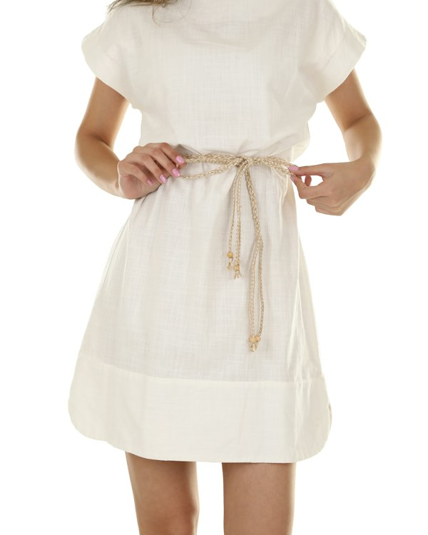

Сукня лляна "Весна"

Легка сукня з поясом-мотузкою для теплих днів і прогулянок містом.
Країна походження: Україна
Основні характеристики:
- Матеріал: 100% льон
- Розміри: XS-XL
- Колір: молочний
- Сезон: весна-літо
- Догляд: делікатне прання при 30 °C